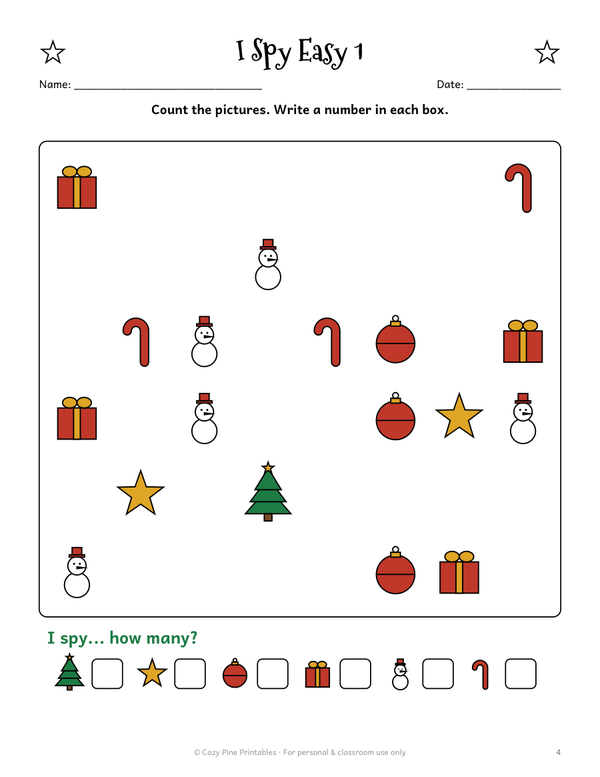
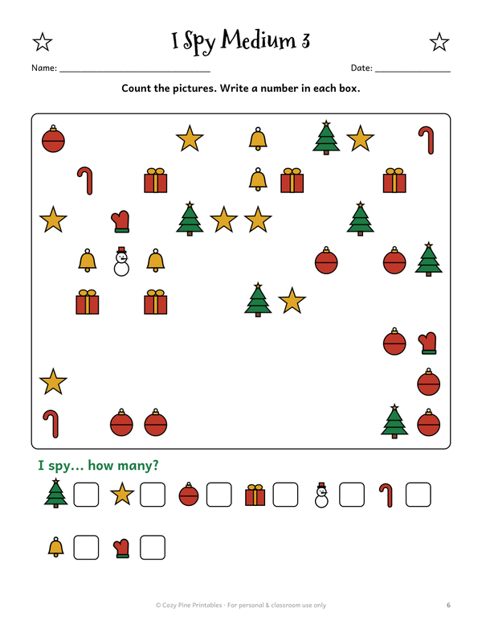
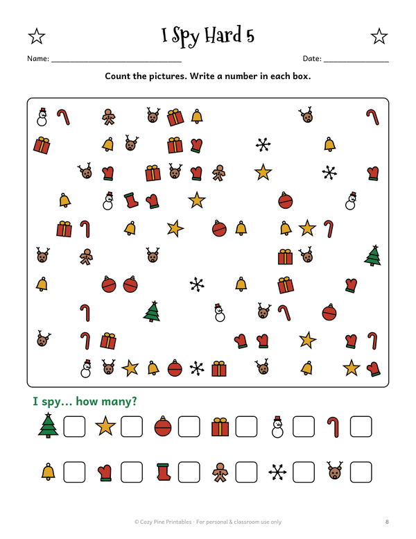
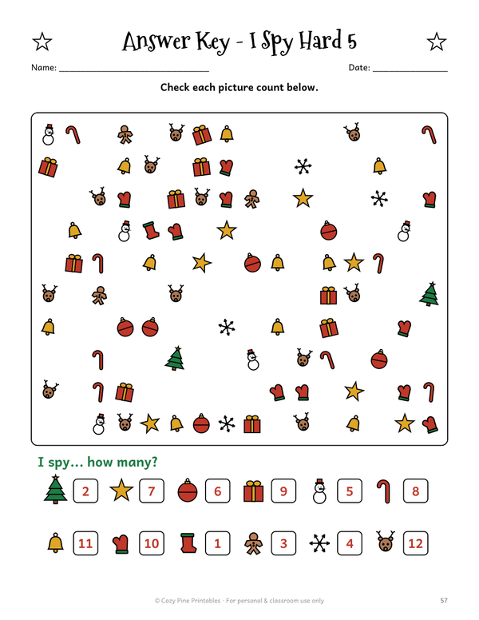
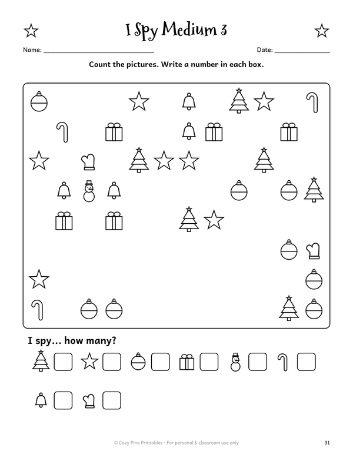
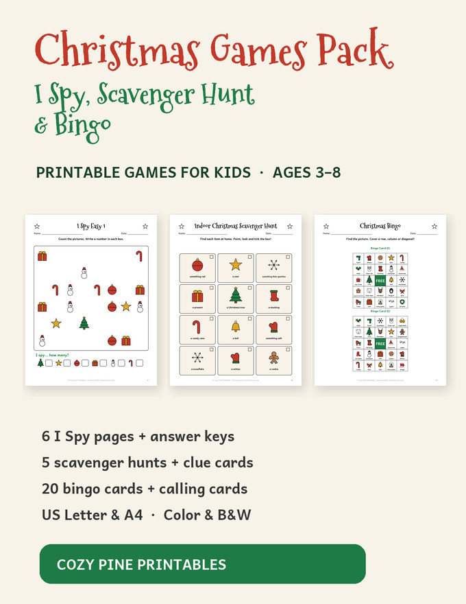

Christmas I Spy Printable for Kids
Free I Spy page + answer key · counting game · ages 3–8
A Christmas I Spy page is counting practice that feels like a game. Kids search a field of small Christmas pictures such as stars, bells, mittens and gifts, count how many of each kind they find and write the number in the box.
Try one page free. The full pack has six I Spy pages in three levels, with answer keys, so you can start easy and work up to hard.
Download a free I Spy page with its answer key, plus an indoor picture scavenger hunt:
⬇ Download the free I Spy + scavenger hunt (US Letter PDF) ⬇ Download the free I Spy + scavenger hunt (A4 PDF)Free PDF includes:
- 1 easy I Spy page + answer key
- Indoor Christmas scavenger hunt with pictures
A look at the I Spy pages





How to play Christmas I Spy
Pick a page and look carefully at the picture field. Count each kind of picture and write the number in its box. Start with an Easy page, then try Medium and Hard, and check the work with the answer key at the end.
Younger kids can point at each picture and count aloud with a grown-up. Older kids can race a timer or a friend.
Three levels, from easy to hard
Easy pages use 6 kinds of pictures with up to 5 of each. Medium pages use 8 kinds with up to 8 of each. Hard pages use 12 kinds with up to 12 of each. Easy suits preschool and kindergarten counters, and Hard gives early elementary kids a challenge.
Every page has an answer key, so kids or teachers can check the counts in a minute.
The free download has one Easy page. The Christmas Games Pack has all six I Spy pages, plus scavenger hunts and bingo.
Christmas Games Pack: I Spy, Scavenger Hunt & Bingo

- 6 I Spy pages in 3 levels (easy → hard) with answer keys
- 5 scavenger hunts: indoor picture hunt, Christmas lights hunt, color hunt, hunt with rhyming clues, make-your-own
- Color and ink-saving black & white versions
- Christmas bingo: 20 player cards + calling cards
- US Letter & A4 · instant PDF download
$5.00
Get all the Christmas games →Ways to play
- Slip a page into a sheet protector and use a dry-erase marker to play again and again.
- Print the black-and-white version to save ink for a whole class.
- In class, give each table one page and let the first team to finish check with the answer key.
- Take pages in a folder for car rides, restaurants or waiting rooms.
Frequently asked questions
Is the I Spy printable really free?
Yes. The free PDF has one Easy I Spy page with its answer key and an indoor Christmas picture scavenger hunt, in US Letter and A4. The other pages are in the paid Christmas Games Pack.
What ages is it for?
The pack is made for ages 3–8. Easy pages work for preschool and kindergarten, and Hard pages are a stretch for early elementary.
Are answer keys included?
Yes, there is an answer key for each of the six I Spy pages, and the free page comes with its own key.